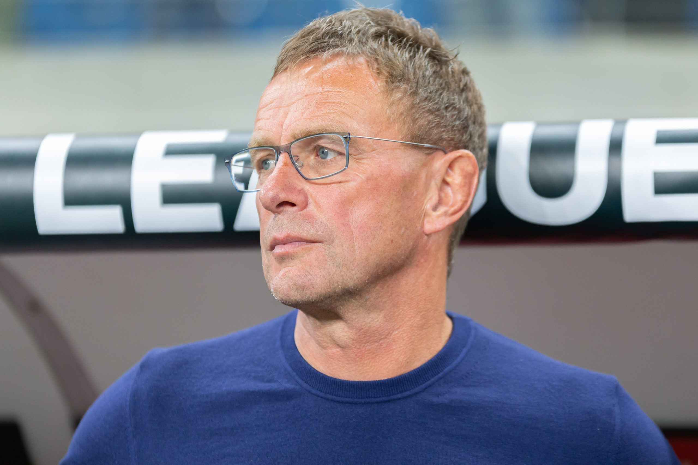
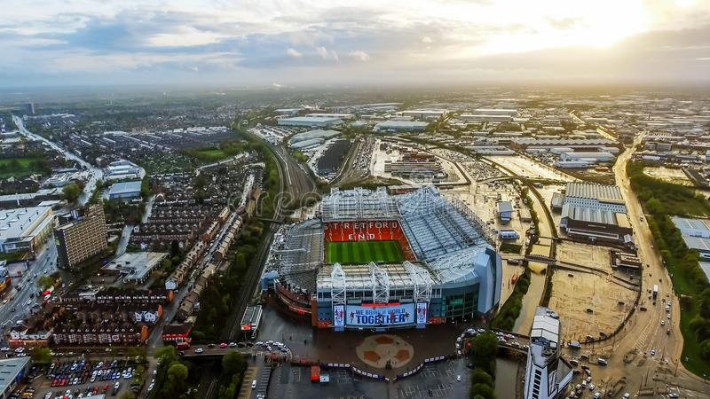
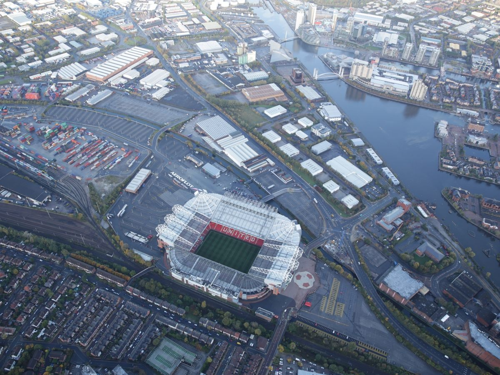
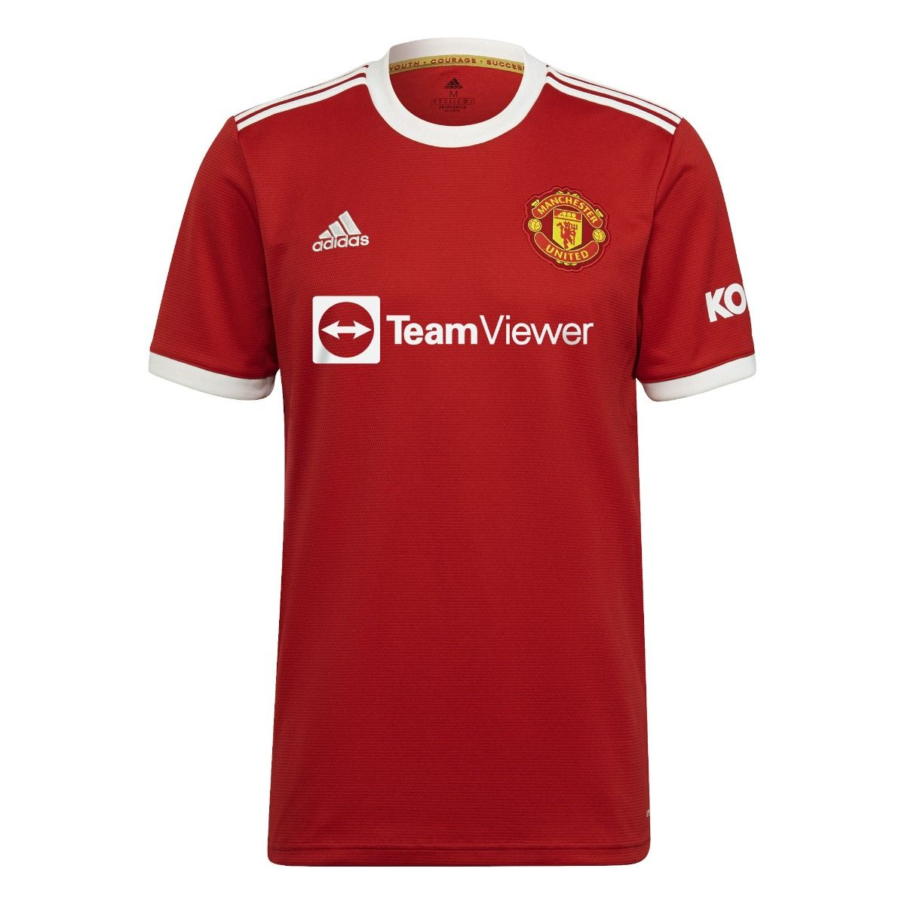
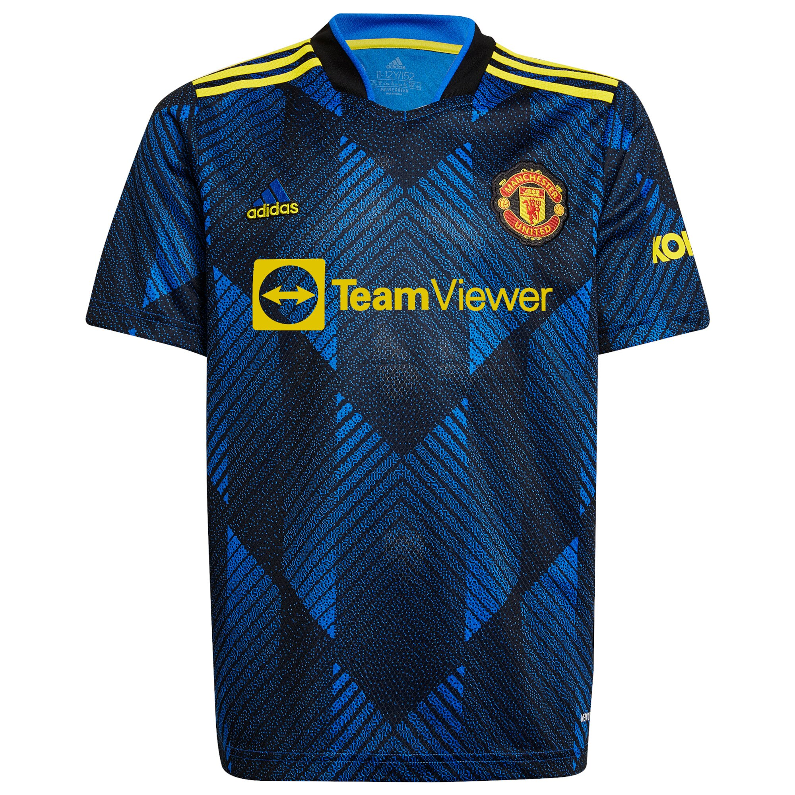
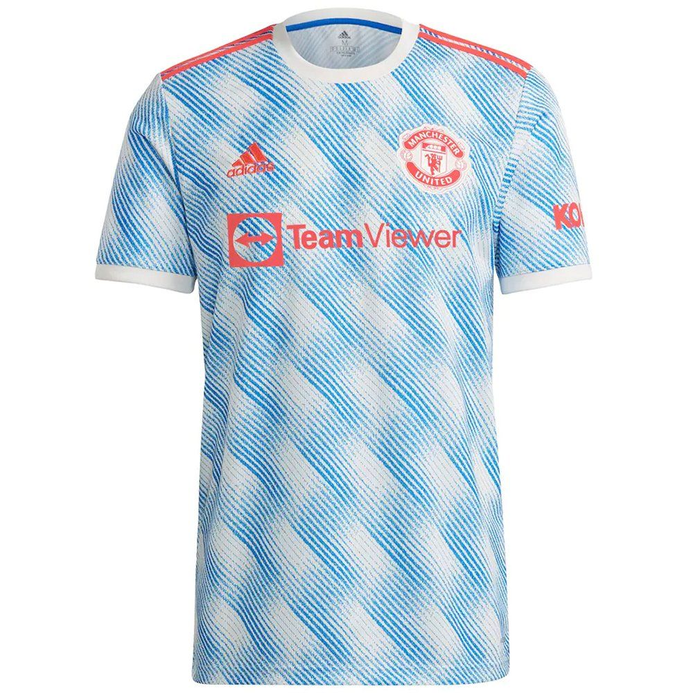

Joukkueen Managerina toimii saksalainen Ralf Ragnick (Yllä kuvassa) Seuran omistaa Glazerin veljekset.


Manchester Unitedin kotistadion on Manchesterissa sijaitseva legendaarinen Old Trafford jota kutsutaan myös "The Theatre of Dreams" -nimellä. Yllä kuvia tästä mahtavasta areenasta.
  Tässä ManU:n pelipaidat järjestyksessä; Koti, vaihtoehtoinen ja vieras